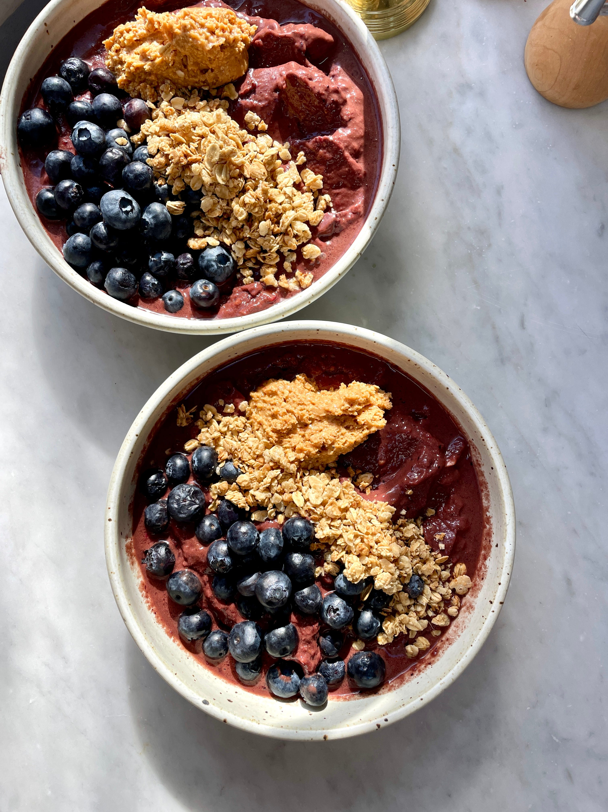

Healthy Breakfast Bowl
A creamy bowl of oats topped with fresh fruits, chia seeds and peanut butter. A delicious way to start your morning.
Preparation time: 10 minutes
Difficulty: Easy
Ingredients
- 50g oats
- 150ml almond milk
- Fresh blueberries
- Half a banana
- 1 teaspoon chia seeds
- 1 teaspoon peanut butter
Preparation
- Put the oats in a bowl.
- Add almond milk and chia seeds.
- Mix all ingredients together.
- Add blueberries and sliced banana.
- Top with peanut butter and enjoy!